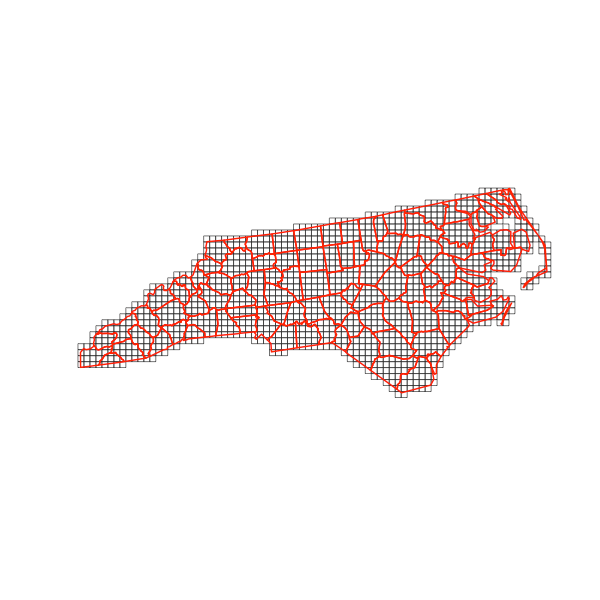

Creates GISCO compatible and INSPIRE-compliant grids with IDs that look like ‘CRS3035RES1000mN3497000E4448000’ or ‘1kmN3497E4447’. Input can be sf, sfc objects or bounding boxes. Outout can be sf polygons, sf centroids, or just data.frame with grid cell center or bottom left corner coordinates. The resulting grids are always aligned to rounded coorindates as per INSPIRE requirements (see here https://github.com/INSPIRE-MIF/technical-guidelines/tree/main/data/su).
[!TIP]
Instead of downloading 1.5 GB (points) or 2.6 GB (polygons) of Eurostat GISCO grid data, then extracting it for your region of interest, you can create grids on the fly with this package. The resulting grid will not carry all the attributes of the original GISCO grid, such as NUTS codes, population count, distance to the coast, country land border, etc., but it will have identical geometry and IDs.
Installation
You can install the development version of gridmaker from GitHub with:
# install.packages("pak")
pak::pak("e-kotov/gridmaker")Example
This is a basic example which shows you how to solve a common problem:
library(gridmaker)
library(sf)
# Load the sample data from the sf package
nc_raw <- st_read(system.file("shape/nc.shp", package = "sf"), quiet = TRUE)
# Define target projected CRS and cell size
target_crs <- 5070 # NAD83 / Conus Albers
cellsize_m <- 10000 # 10 km
# Project the data
nc <- st_transform(nc_raw, target_crs)
# Create a grid covering the data
nc_grid <- create_grid(
grid_extent = nc,
cellsize_m = cellsize_m,
output_type = "sf_polygons",
clip_to_input = TRUE
)
head(nc_grid, 3)Simple feature collection with 3 features and 5 fields
Geometry type: POLYGON
Dimension: XY
Bounding box: xmin: 1570000 ymin: 1340000 xmax: 1600000 ymax: 1360000
Projected CRS: NAD83 / Conus Albers
id X_LLC Y_LLC GRD_ID_LONG GRD_ID_SHORT geometry
54 54 1580000 1340000 CRS5070RES10000mN1340000E1580000 10kmN134E158 POLYGON ((1580000 1340000, ...
55 55 1590000 1340000 CRS5070RES10000mN1340000E1590000 10kmN134E159 POLYGON ((1590000 1340000, ...
132 132 1570000 1350000 CRS5070RES10000mN1350000E1570000 10kmN135E157 POLYGON ((1570000 1350000, ...
plot(st_geometry(nc_grid), border = 'grey20')
plot(st_geometry(nc), add = TRUE, border = 'red', lwd = 2)
Citation
To cite package ‘gridmaker’ in publications use:
Kotov E (2025). gridmaker: Create INSPIRE-compliant grids with IDs. https://github.com/e-kotov/gridmaker.
BibTeX:
@Manual{gridmaker,
title = {gridmaker: Create INSPIRE-compliant grids with IDs},
author = {Egor Kotov},
year = {2025},
url = {https://github.com/e-kotov/gridmaker},
}[!NOTE]
For original Eurostat’s command line utility to create GISCO grids, see https://github.com/eurostat/GridMaker.